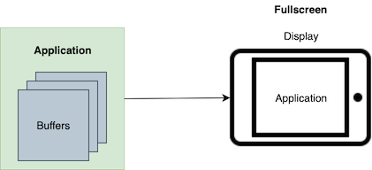
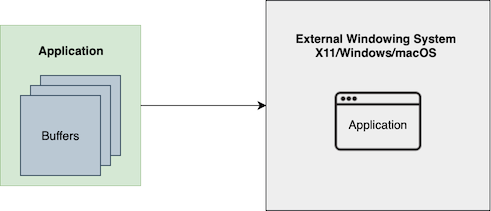

Wayland and Qt
Wayland is a display server protocol that helps you to create multi-process systems. Multiple client applications ("clients") can render their own content to off-screen buffers. These buffers are then passed to a display server, often called a compositor, using the Wayland protocol. Finally, the compositor composites and positions the content on a physical display.
Why Use Multi-Process
In a single-process system, all parts of the UI run in one, single process. In a multi-process system, all clients run in their own, dedicated process. With Qt, at any point in your development process, you can choose to switch between single-process and multi-process.

Multi-Process Client Architecture

Single Process Client Architecture
The use of multi-process has the following benefits:
| Stability | |
|---|---|
| Easier to recover when clients hang or crash | If you have a complex UI, then multi-process is useful because if one part of the UI crashes, it doesn't affect the entire system. Similarly, the display won't freeze, even when one client freezes. Note: If your client is mandated by law to render safety-critical information, consider using Qt Safe Renderer Overview. |
| Protection against possible memory leaks | In a multi-process system, if one client has a memory leak and consumes lots of memory, that memory is recovered when that client exits. In contrast with single-process, the memory leak remains until the entire system restarts. |
| Security |
|---|
| In a single-process system, all clients can access each other's memory. For example, there's no isolation for sensitive data transfer; every line of code must be equally trustworthy. This isolation is there, by design, in multi-process systems. |
| Performance |
|---|
| If you have a CPU with multiple cores, a multi-process system can help distribute the load evenly across different cores, making more efficient use of your CPU. |
| Interoperability |
|---|
| You can interface with non-Qt clients in a multi-process system, as long as your clients understand Wayland or X11. For example, if you use gstreamer for video or if you want to use a navigation application built with another UI toolkit, you can run these clients alongside your other Qt-based clients. |
Why Use Wayland Instead of X11 or Custom Solutions
X11, a desktop protocol from the 80s, no longer fits with how graphics hardware works today. It is large, complex, and lacks customizability. In fact, it is difficult to run a client fluidly with X11, and reach 60 fps without tearing. Wayland, in contrast, is easier to implement, has better performance, and contains all the necessary parts to run efficiently on modern graphics hardware. For embedded, multi-process systems on Linux, Wayland is the standard.
However, if you are working with old hardware or legacy applications, then Wayland may not be a good option. The Wayland protocol is designed with security and isolation in mind, and is strict/conservative about what information and functionality is available to clients. While this leads to a cleaner and more secure interface, some functionality that legacy applications expect may no longer be available on Wayland.
Particularly, there are three common use cases where Wayland may not be the best option:
- The hardware or platform is old and only supports X11; in which case you have no choice.
- You have to support legacy applications that depend on features that are absent in the Wayland protocol for security and simplicity.
- You have to support legacy applications that use a UI toolkit that doesn't run on Wayland at all. In some cases, you may be able to work around this by running those applications on XWayland instead.
Back when X11 was very popular, developers wrote their own custom solutions to circumvent X11 issues. Older Qt versions had the Qt Windowing System (QWS), which is now discontinued. Today, most of these use cases are covered by Wayland, and custom solutions are becoming less and less common.
Possible Trade-Offs with Multi-Process
Use of multi-process systems do bring about the following trade-offs:
- Increased video memory consumption
- Increased main memory consumption
- Repeated storage of graphical resources
| Increased video memory consumption |
|---|
| This can be a constraint for embedded devices. In multi-process, each client needs to have its own graphics buffer, which it sends to the compositor. Consequently, you use more video memory compared to the single-process case: where everything is drawn at once and there is no need to store the different parts in intermediary buffers. |
| Increased main memory consumption |
|---|
| Apart from some extra overhead at the OS level, running multiple clients may also use more main memory as some parts need to be duplicated once per client. For example, if you run QML, each client requires a separate QML engine. Consequently, if you run a single client that uses Qt Quick Controls, it's loaded once. If you then split this client into multiple clients, you're loading Qt Quick Controls multiple times, resulting in a higher startup cost to initialize your clients. |
| Repeated storage of graphical resources |
|---|
| In a single-process system, if you're using the same textures, background, or icons in many places, those images are only stored once. In contrast, if you use these images in a multi-process system, then you have to store them multiple times. In this case, one solution is to share graphical resource between clients. Qt already allows sharing image resources in main memory across processes without involving Wayland. Sharing GPU textures across processes, on the other hand, requires more intricate solutions. Such solutions are currently in development for the Qt Wayland Compositor. |
What Qt Wayland Offers
For Clients
Qt clients can run on any Wayland compositor, including Weston, the reference compositor developed as part of the Wayland project.
Any Qt program can run as a Wayland client (as part of a multi-process system) or a standalone client (single-process). This is determined on startup, where you can choose between the different backends. During the development process, you can develop the client on the desktop first, then test it on the target hardware later. You don't need to run your clients on the actual target hardware all the time.

Single-Process Client Development
If you develop on a Linux machine, you can also run the compositor within a window on your development machine. This lets you run clients in an environment that closely resembles the target device. Without rebuilding the client, you can also run it with -platform wayland to run it inside the compositor. If you use -platform xcb (for X11), you can run the client on the desktop. In other words, you can start developing your clients before the compositor is ready for use.
For Servers
The server, or compositor, connects to the display and shows the contents of each client on the screen. The compositor handles input and sends input events to the corresponding client. In turn, each client connects to the compositor and sends the content of its windows. It's up to the compositor to decide:
- How and where to show the content
- Which content to show
- What to do with the different client graphics buffers
This means, it's up to the compositor to decide what a multi-process system is. For instance, the clients could be part of a 3D scene with windows on the walls, on a VR system, mapped to a sphere, and so on.
The Qt Wayland Compositor is an API for building your own compositor. It gives you full freedom to build a custom compositor UI and manage the windows of various clients. You can combine both Qt Quick and QML with the Qt Wayland Compositor to create impressive, imaginative UIs. For more information, see Qt Wayland Compositor.